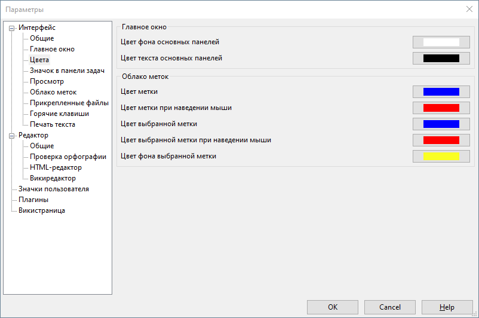

Интерфейс - Цвета

В данном разделе можно изменить основные цвета, используемые в главном окне программы.
С помощью параметров из группы Главное окно можно поменять цвет фона и текста панелей главного окна (панель "Заметки", "Метки", "Прикрепленные файлы"). Это может быть полезно, если, например, вы используете темную тему оформления в операционной системе и хотите, чтобы программа OutWiker выглядела таким же образом.
Группа параметров Облако меток позволяет настраивать цвета панели "Метки".